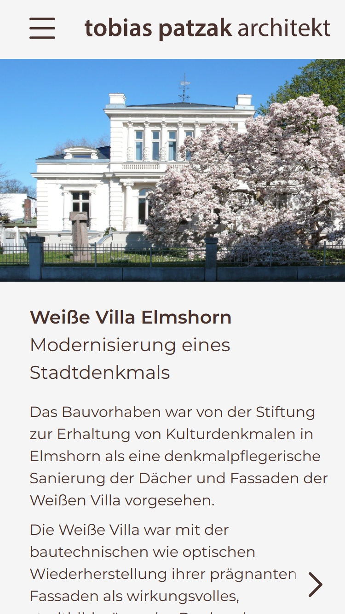
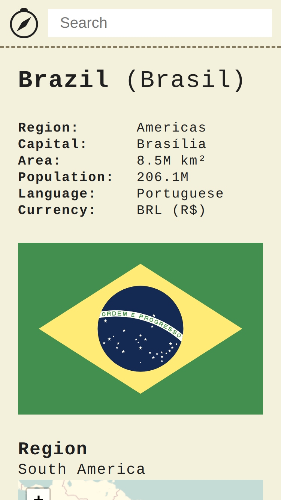

Schon als kleines Kind haben mich Computer fasziniert, ob ich meinem großen Bruder beim Spielen zugeschaut habe oder wie mein Vater Windows 2000 installiert hat.
Und das hat sich auch nie geändert. Schularbeiten haben mir am besten gefallen, wenn ich sie am Computer machen konnte, in meiner Freizeit habe ich gerne daran gespielt und mein Lieblingsfach war Informatik.
Dort machte ich auch meine ersten Erfahrungen mit Webentwicklung und Programmieren, was mich sofort begeisterte.
Deswegen mache ich jetzt beides zu meinem Job.
ich bin Pieter Thormählen,
angehender Webentwickler.
meine Arbeiten
Webauftritt Architekturbüro

Das Architekturbüro "tobias patzak architekt" wünscht einen neuen Webauftritt, damit sich potentielle Auftraggeber über das Architekturbüro und die von ihm realisierten Bauprojekte informieren können.
Um das zu erreichen, habe ich einen Webauftritt entwickelt, der die Projektfotos und Erläuterungstexte auf jedem Gerät im Design des Architekturbüros darstellt.
Um das zu erreichen, habe ich einen Webauftritt entwickelt, der die Projektfotos und Erläuterungstexte auf jedem Gerät im Design des Architekturbüros darstellt.
Plattform für Rezepte

Ich koche gerne, und das Rezepteregal ist überfüllt und durcheinander.
Deshalb habe ich eine Webanwendung entwickelt, mit der man ganz einfach seine eigenen Rezepte editieren und in einer digitalen Sammlung anlegen und durchsuchen kann.
Desweiteren kann man nach neuen Rezepten suchen, wenn man mal Lust hat, etwas Neues auszuprobieren.
Deshalb habe ich eine Webanwendung entwickelt, mit der man ganz einfach seine eigenen Rezepte editieren und in einer digitalen Sammlung anlegen und durchsuchen kann.
Desweiteren kann man nach neuen Rezepten suchen, wenn man mal Lust hat, etwas Neues auszuprobieren.
Frontend Länderdatenbank
über mich

Pieter Thormählen
Kaltenweide 48
25335 Elmshorn
0176 - 57 53 89 89
Pieter.Thormaehlen@googlemail.com
Kaltenweide 48
25335 Elmshorn
0176 - 57 53 89 89
Pieter.Thormaehlen@googlemail.com